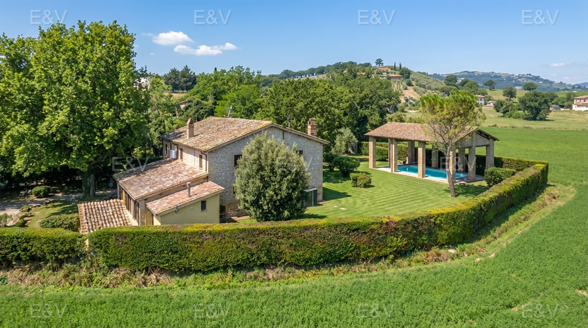
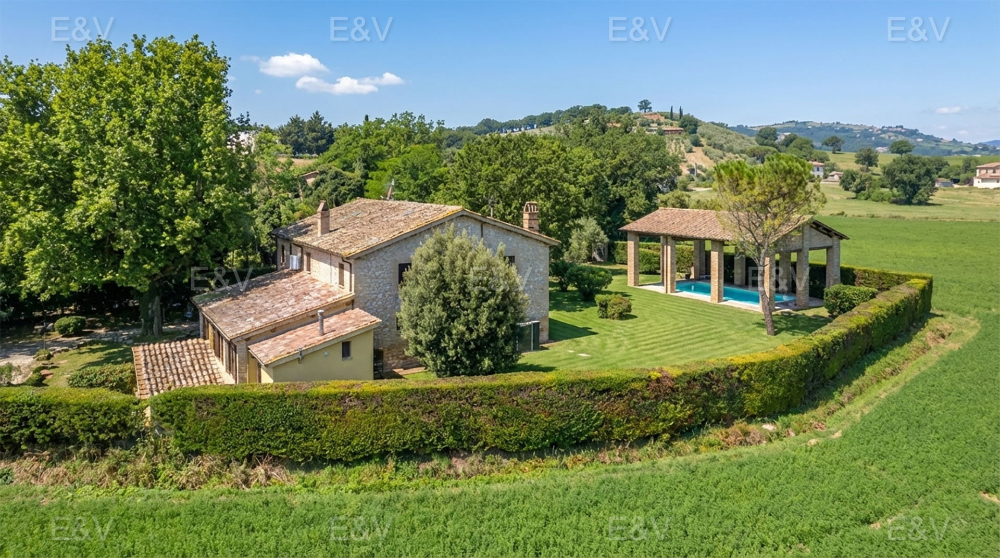
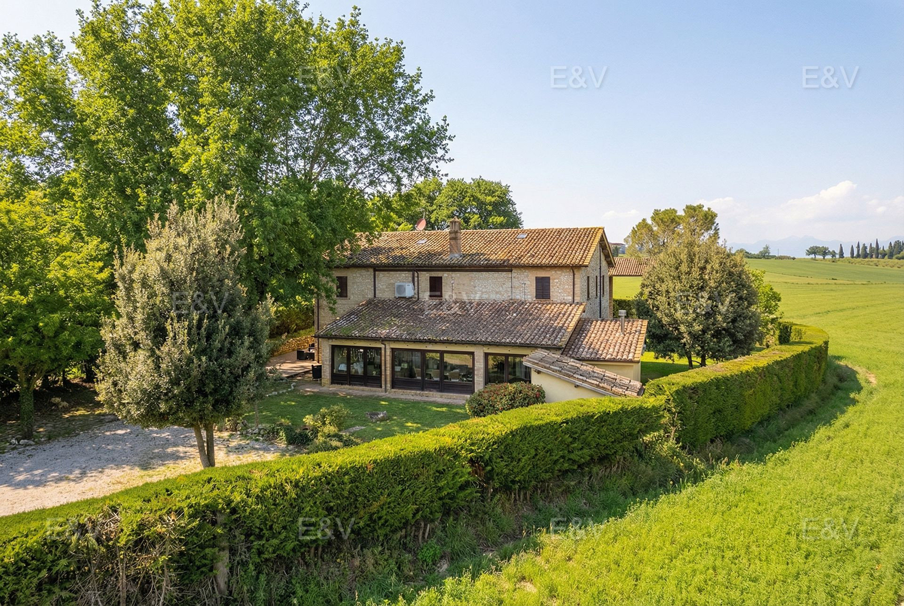
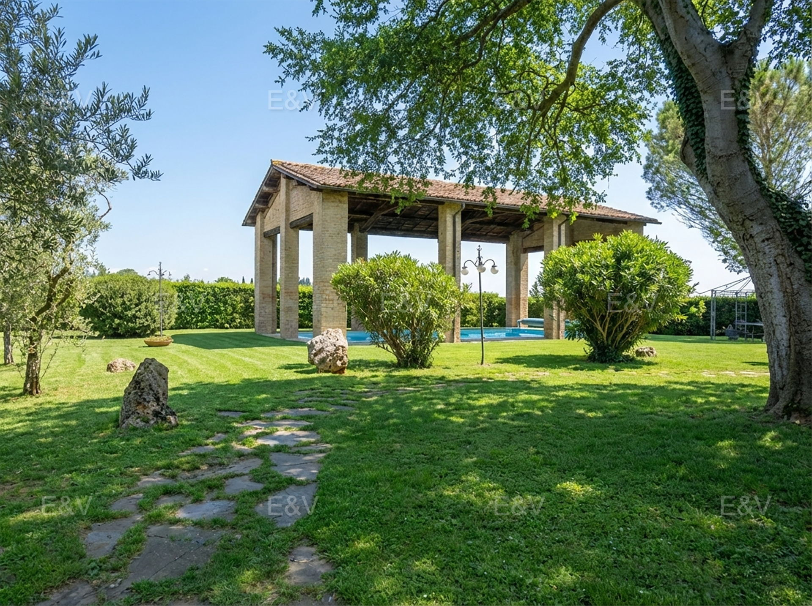
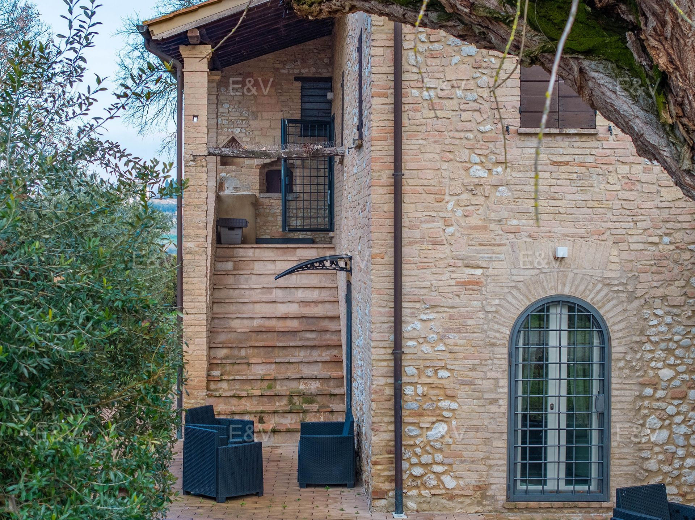
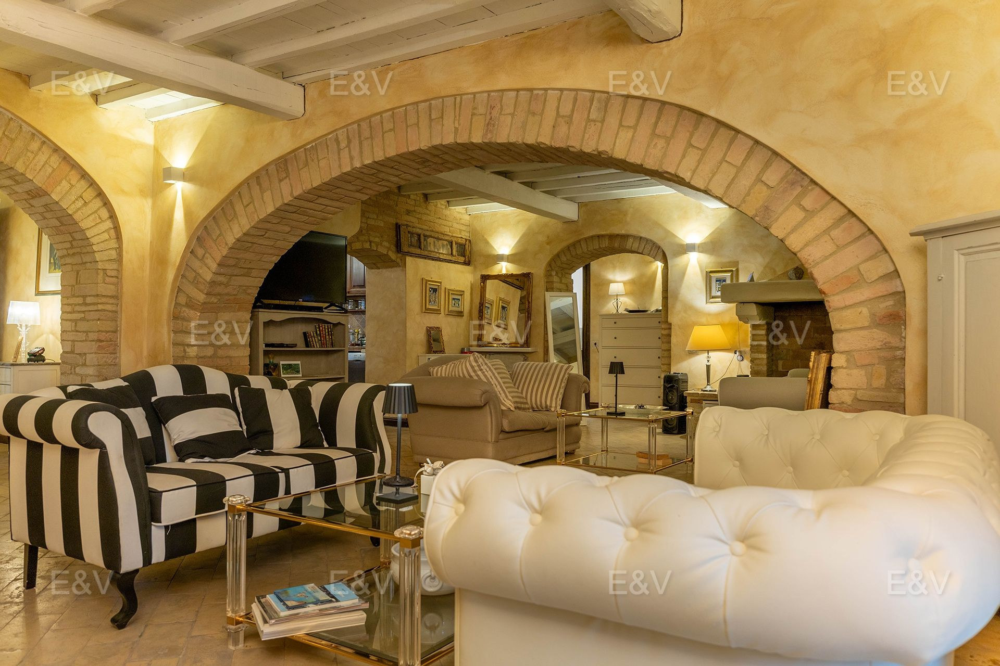
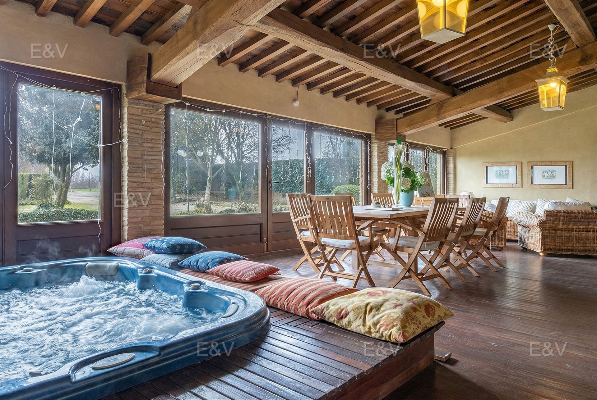

€910.000
Between Montefalco and Trevi, Umbria
Open the listingUmbrian farmhouse character without being a wreck: exposed beams, natural stone, handmade terracotta, fireplace, jacuzzi veranda and a built private pool in the garden. Condition top, habitable now.
Opened 31 Aug 2026. Schema/listing Offer €910000 ACTIVE. hasSwimmingPool true. 6 bed / 7 bath / 450 m² total (body also says ~350 m²) / 2,500 m². Year 1980, energy G. Not umbertide-casale W-046MC7, magione-cipressi W-0470ZV or todi-pietra W-04B7UG. Not a bargain at €910k.





